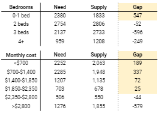
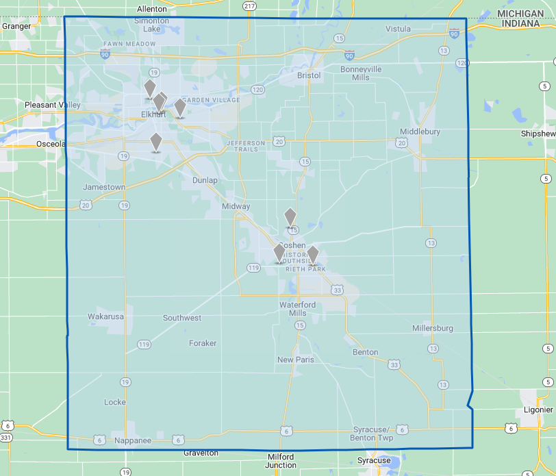
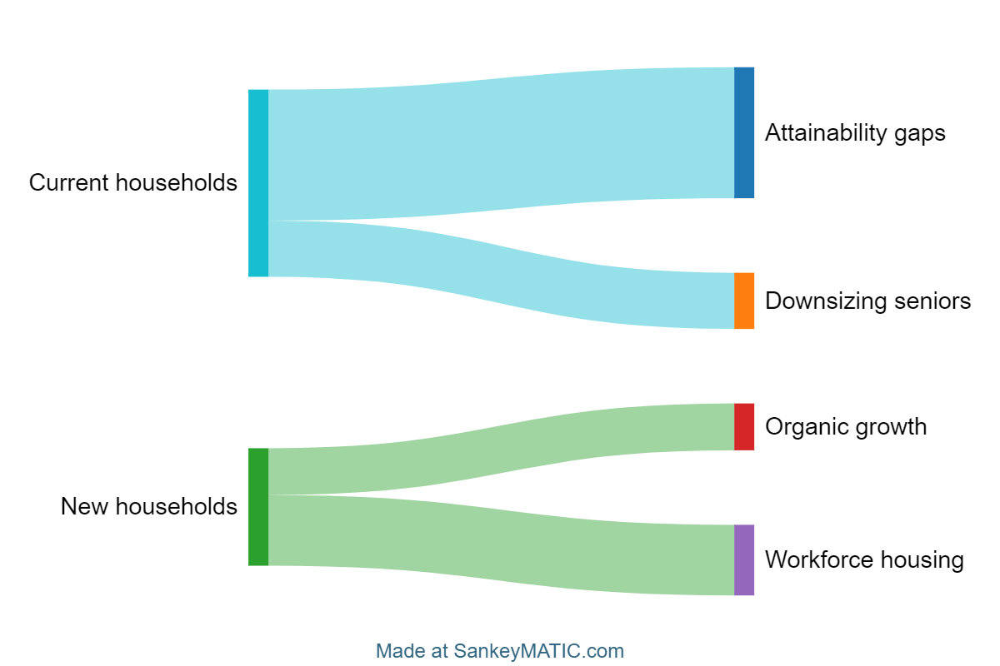
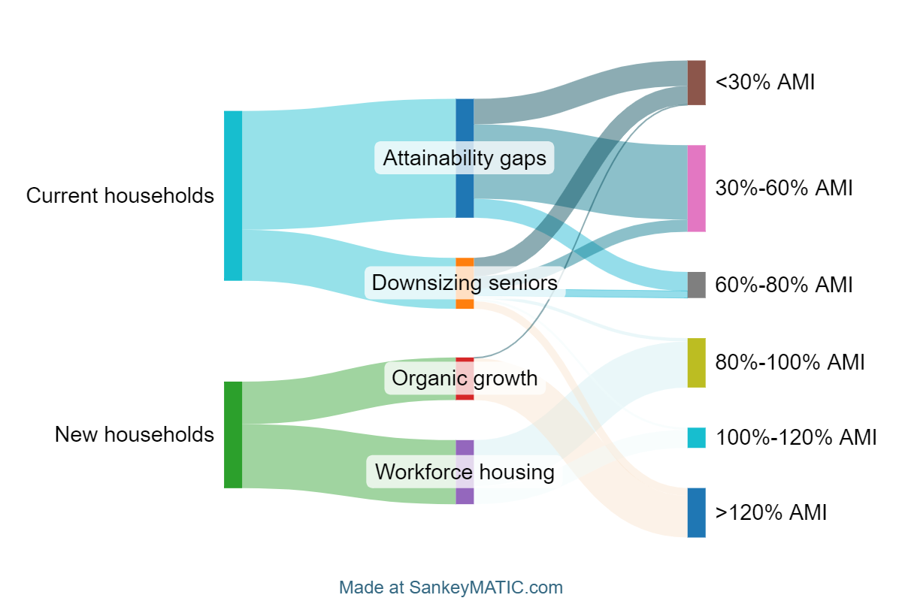

Elkhart County HNA | People | Place | Demand | Back to Regional Dashboard
This dashboard was created by CommunityScale for MACOG (Michiana Area Council of Governments) to summarize the Housing Needs Assessment for Elkhart County as prepared to support MACOG's overall Regional Housing Study.
Table of contents in progress...
 Overview
Overview
A foundational component of MACOG's Regional Housing Plan, this Housing Needs Assessment is the result of extensive quantitative data analysis and stakeholder engagement to understand housing needs and opportunties in Elkhart County.
This Housing Needs Assessment document is also availble in a much more detailed, downloadable pdf format:
The Housing Needs Assessment includes the following sections:
 People
PeopleThe following section profiles the people of Elkhart County, detailing characteristics such as income, employment, household structure, and cost burden. These indicators combine to describe the local population's housing needs and preferences which inform this report's recommended strategies for new housing production to meet demand and fill gaps in affordability and attainability.
Elkhart County’s population has been aging over the past decade, with the 65+ age group growing faster than other groups and projected to outpace others into the future. In general, younger households are more likely to prefer family-oriented housing and neighborhoods where as older households may have a broader range of preferences and priorities, including senior options.
The chart at left illustrates trends in population by age cohort, both historic and projected. The projection is based on recent trends extended. Depending on economic, policy, and other conditions, the future age distribution may vary over time. The chart below summarizes net household change by age group.
The following analysis examines household characteristics and housing need in terms of household incomes relative to the local Area Median Income (AMI). For example, households within the "60-80%" group earn between 60% and 80% of the HUD-established AMI for the metro area. Each household AMI group has a different need for monthly housing costs.
These households typically represent a community’s “middle class” workforce, including public safety officers, skilled nurses, educators, and municipal employees. MACOG’s low proportion of 80-120% AMI households is likely a result of limited available housing options at price points this group can afford, requiring they live elsewhere.
Elkhart County’s household population has grown slowly since 2010. In terms of relative income levels, most of the growth has been concentrated among higher-income households, especially the >120% AMI group.
| AMI Group | 2010 | 2022 | 2034 |
|---|---|---|---|
| Below 30% | 16,465 | 17,090 | 17,319 |
| 30-60% | 22,569 | 21,886 | 20,799 |
| 60-80% | 12,404 | 12,855 | 12,740 |
| 80-100% | 10,331 | 10,701 | 10,850 |
| 100-120% | 8,789 | 9,120 | 9,572 |
| Above 120% | 29,983 | 35,815 | 41,329 |
These charts break down socioeconomic and demographic indicators by income in terms of AMI level.
Elkhart County’s lowest income groups are its most racially diverse, especially the <30% and 30-60% AMI groups. Other income levels are relatively consistent in their proportional ratios of white and non-white households.
Elkhart County’s families with children are most prevalent in the >120% AMI group. Nonfamily households are predominantly low-income (this group includes one-person households). Families without children (such as couples) are most common at the >120% AMI level.
Most households in the >65 age group have incomes below 60% AMI. Households between 25-64 are most prevalent in the >120% AMI but also particularly numerous in the 30-60% and <30% AMI groups. The small group of youngest households (<25 years) are somewhat more concentrated at lower income levels.
Elkhart County’s resident population includes many people with disabilities that may restrict their housing choices. People with disabilities are most common in the 65+ age group but they are represented across all age groups at some level.
Households are cost burdened when paying more than 30% of their income on housing costs. They are considered severely cost burdened when these costs exceed 50% of their income. For renters, this includes lease rent and utilities. For homeowners, this includes mortgage costs, property taxes, insurance, utilities, and any condo fees.
In Elkhart County, most low-income households are cost burdened. Most households earning >80% AMI are not cost burdened.
PlaceThe following section profiles the community spatially and assesses Elkhart County's housing stock and affordability, detailing characteristics such as structure type, bedroom count, and development timeframe as well as household costs and market pricing for local rental and ownership units.
text...
Elkhart County households have very different housing choices available depending on if they buy or rent, such as in terms of fundamental features like structure type and number of bedrooms.
This graph inventories the local housing stock in terms of each unit's structure type, a characteristic defined as the number of units in the building that contains a given unit.
This graph inventories the local housing stock in terms of bedroom count by unit by tenure. The majority of Elkhart County’s housing units are two bedroom or larger, especially among ownership units.
This chart compares the median listing price in Elkhart County with the home value affordable to a household earning the median household income. A wider gap means higher barrier to entry for first-time homebuyers and increased risk that an existing resident might be priced out of the community if they choose or need to move to a different house.
The calculations behind this chart include consideration of mortgage interest rates, typical down payments, and added monthly costs such as private mortgage insurance, property tax, home insurance, and utilities.
This chart tracks the typical market value for single family homes and condos over the past several years. The adjacent table translates these values into monthly costs (mortgage + tax and other costs).
This chart summarizes the distribution of costs across all ownership units in the area, most of which last transacted years ago.
These charts reveal the significant difference between how much most homeowners currently pay per month (right) and it would cost per month to own a home purchased on today’s market (left). About 45% of MACOG homeowners pay below $1,850/mo compared to the $2,213 and $2,763 required to afford a condo and single family on today’s market.
| Home type | Typical price | Monthly cost |
|---|---|---|
| Single family | $244,406 | $1,945 |
| Condo | $202,291 | $1,632 |
Comparing the needs of current residents with the current housing stock reveals potential misalignments between supply and demand.
This chart simulates the unit mix today’s local population would choose if all households could move into units that match their likely bedroom preferences and willingness to pay.
These charts compare this “need” to the current housing stock. Positive gaps indicate under-supply; negative gaps indicate oversupply.

This is an instructive but largely hypothetical analysis due to the scale of the gap and the challenge of delivering new affordable housing in large quantities.
Elkhart County saw relatively consistent housing production for most of the 20th century but the pace has slowed considerably in the past two decades. This table chronicles the community's development history, indicating decades with relatively more or less construction activity. 2020 or later is approximate as new housing units are completed.
Building permitting history is a proxy for construction activity over time. Elkhart County has seen relatively consistent permitting activity over the past decade, typically between 250-500 units per year with a couple outliers.

| Unit size | Average rent | Of total |
|---|---|---|
| Studio | $1,122 | 6% |
| 1 bedroom | $1,320 | 52% |
| 2 bedrooms | $1,729 | 34% |
| 3+ bedrooms | $1,911 | 8% |
 Demand
DemandIn order to calibrate future housing production to best meet the community's needs, two factors must be established: how many units are needed in total and what is the right mix of unit types and prices. The following section addresses each of these factors to inform recommendations that effectively meet local need and reflect the community's values and priorities.

Based on the analyses contained within the People and Place sections of this report, Elkhart County’s housing demand is driven by a number of factors that include both unmet demand among existing residents and new growth among projected and potential future residents. This chart illustrates demand origins on the left and demand drivers on the right.
Each demand driver in more detail below followed by an estimated quantification of total demand by income level.
The gap analysis compares Elkhart County’s distribution of household incomes to its mix of housing options by cost to uncover potential supply shortages at different price points. The analysis identified a shortage of 12,502 units across a range of price points below $1,650 per month.
Adding units at these price points would help take pressure off existing residents currently experiencing cost burden.
| 65+ households of 1-2 people in 3+ bedroom units | 17,869 |
| Potential annual downsizing rate | 3% |
| Units needed to accommodate downsizers over 10 years | 5,361 |
|---|
Elkhart County’s seniors currently comprises a modest portion of the total population but this share is expected to grow over the next 10 years. Most of these seniors live in relatively large units of 3 or more bedrooms.
Given changing housing preferences and needs as people age, it is likely a portion of these senior households will explore downsizing options such as a smaller, accessible unit with fewer bedrooms located in a walkable location. If 3% of these households sought new units to downsize into each year, the county would need to add 5,361 units appropriate for seniors over the next 10 years.
Recent trends suggests Elkhart County should expect to grow by 1,936 new households over the next 10 years. This trajectory provides the baseline driver for the housing production target on the following pages.
| Household growth: 1,936 | Forecasted from 2024 to 2034. |
| Overcrowding adjustment: 0 | Local rate of 2.5% is below the national average of 3.4%. |
| Replacement housing: 399 | 0.05% of the housing stock is replaced annually |
| Vacancy adjustment: 0 | Local rate of 11.2% is above the healthy market minimum of 5% |
| Substandard adjustment: 0 | Local rate of 0.2% is below the national average of 0.4% |
| Total units needed: 2,335 | To keep up with growth and maintain a healthy housing stock |
|---|
To meet the trends extended growth projection, Elkhart County would need to add 2,335 housing units over the next decade. This production target combines demand driven by net household growth as well as other factors which also contribute to maintaining a suitable housing supply over time.
| Jobs in Elkhart County | 134,120 |
| Workers that live and work in Elkhart County | 26,959 |
| Portion of local workforce that live in Elkhart County | 20% |
| Desired portion by 2034 | 25% |
| Additional workforce households (and units) by 2034 | 6,571 |
|---|
As a regional employment hub, Elkhart County contains more jobs than housing units. However, only about 20% of the people working in Elkhart County live in the County as well. While many of the workers who commute into the city simply choose to live somewhere else, a portion of these workers may prefer to live in the County if the right housing options were available.
Increasing the rate of local workforce living in Elkhart County to 25% by 2034 would require providing 6,571 additional households.
“Workforce housing” is typically considered affordable to 80-120% AMI, a segment of the population vulnerable to displacement if they cannot find adequate and affordable housing, including police, firefighters, teachers, skilled nurses, and municipal employees.

This diagram illustrates how Elkhart County’s 10-year housing demand translate into income levels. While this distribution reflects expected demand over the next 10 years, it does not necessarily coincide with the housing production target in the following Results section. Housing for each income level requires a different set of policies, programs, and subsidies to build. In many cases, there simply is not enough capacity to meet the full demand right away.
The following summarizes current trends and housing preferences that should be considered when programming and designing housing to best meet demand.
| Smaller units: Fewer bedrooms for smaller households. |
| Parking optional: Enabling a car-free or car-lite lifestyle. |
| Roommate-ready: Accommodating non-family households. |
| Green building: Efficient, low-impact design and systems. |
| Multigenerational: Space for adult children or elderly parents. |
Household structures have changed significantly since much of Elkhart County’s housing supply was built. Today, households are smaller, less likely to have one or more children, and more likely to include non-family or multi generational cohabitants. Future development should be designed to reflect the current diversity of household structures and wider range of housing needs and preferences.
| Moderate cost for families: Workforce families can afford units that cost $1,700 - 2,500 per month. |
| Lower cost for singles: One-person workforce households cannot afford as much as dual-earner families. |
| Not to too many bedrooms: Workforce-oriented housing should include mostly 0-2 bedroom units. |
| Well-maintained: Workforce can afford rent/mortgage but large capital costs can be destabilizing. |
| Near job centers: Households can save money by living close to work and commuting without a car. |
“Workforce housing” is typically oriented to middle-income households that often consist of singles, couples, or young families. Jobs typically attributed to this group include public safety officers, educators, municipal employees, skilled nurses, and other occupations that often require some level of higher education and pay wages equating to 80-120% AMI.
| Universal design: Accommodating to people with limited mobility. |
| Low maintenance: Less space and less work to keep up. |
| Energy efficient: Lower utility costs affordable on fixed income. |
| Accessible: Single-level with ADA-compliant doors, baths, etc. |
| Social: Designed and located to promote an active community life. |
“Workforce housing” is typically oriented to middle-income households that often consist of singles, couples, or young families. Jobs typically attributed to this group include public safety officers, educators, municipal employees, skilled nurses, and other occupations that often require some level of higher education and pay wages equating to 80-120% AMI.
| Walkability: More daily needs and wants accessible on foot. |
| Transit: Close to bus lines and train connections. |
| Amenities: Near restaurants, shops, and cultural destinations. |
| Services: Access to health and community services without a car. |
| Activity: Located in a lively and vibrant neighborhood. |
Recent years have seen growing demand for housing in walkable, downtown or compact neighborhood environments. This can include both dense urban places as well as small town downtowns. Increasingly, the most desirable and competitive housing markets are those with access to the qualities and amenities of a downtown environment within walking distance.
The Michiana Area Council of Governments (MACOG) is a voluntary organization of local governments that studies and attempts to resolve areas of interlocal issues.
CommunityScale is a pioneering urban planning and spatial data analysis company serving clients across the United States.
Follow CommunityScale on LinkedIn and Twitter/X
This dashboard is open source MIT license - 2024 CommunityScale